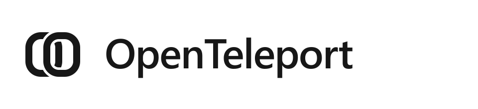
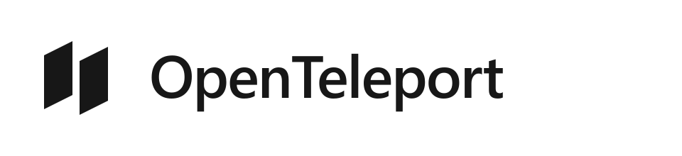
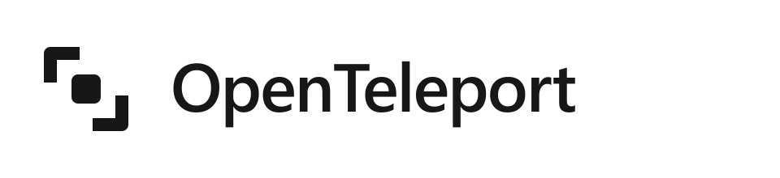
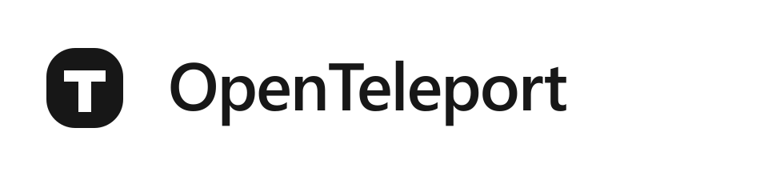
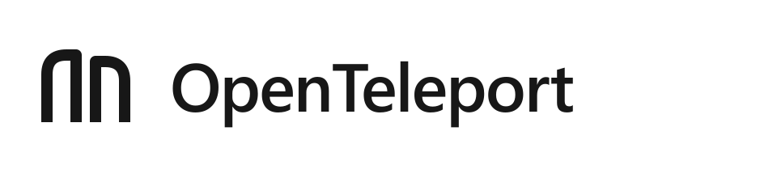

Ten sam jasny styl i napis. Zmieniamy tylko symbol. Ikony i favicony pozostają bez zmian do wyboru kierunku. Każda propozycja jest osobnym plikiem PNG oraz SVG.

Dwie połączone formy — agent zachowuje ciągłość między aplikacjami.

Dwa przesunięte moduły tworzą jeden znak przeniesienia.

Dwa przeciwległe narożniki i element przechodzący przez środek.

Litery O i T połączone w jeden zwarty symbol.

Dwie spokojne, symetryczne bramy z otwartym przejściem pomiędzy nimi.